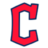

Vogt shuns Mariners rumors, says he'll manage Guardians in '27
Guardians manager Stephen Vogt dispelled speculation about his future, saying he'll return next season to chase an elusive World Series title.


American League Central · American League
Guardians manager Stephen Vogt dispelled speculation about his future, saying he'll return next season to chase an elusive World Series title.